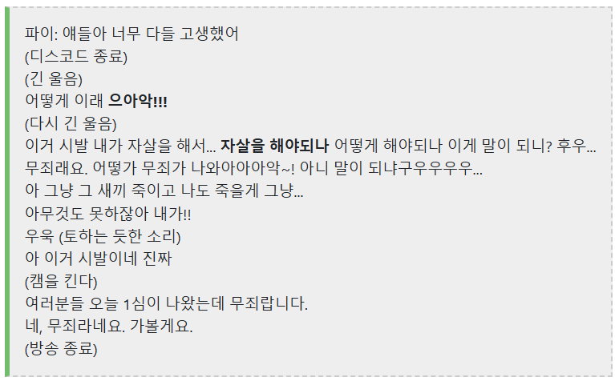
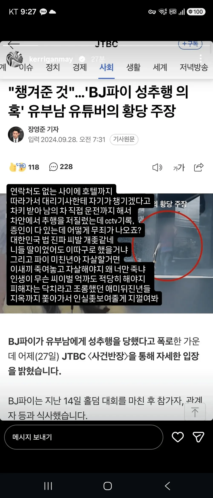
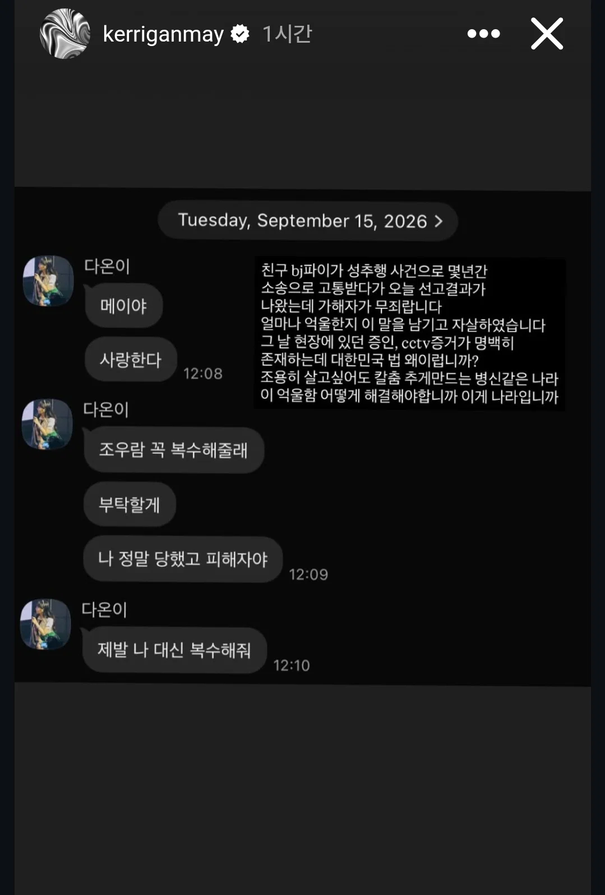

머니게임에 나온 그 파이 맞음
2024년에 성추행 당했다며 한 홀덤 선수를 고소했었음
그 1심이 어제 나왔는데 무죄임
https://www.youtube.com/watch?v=KiiIfoTYs0s

이에 자살 암시하며 방송 종료


방송 종료 몇시간 후 지인인 케리건 메이가 올린 인스타
머니게임에 나온 그 파이 맞음
2024년에 성추행 당했다며 한 홀덤 선수를 고소했었음
그 1심이 어제 나왔는데 무죄임
https://www.youtube.com/watch?v=KiiIfoTYs0s

이에 자살 암시하며 방송 종료


방송 종료 몇시간 후 지인인 케리건 메이가 올린 인스타
넌 진짜 문제 있다.
넌 니가 무고의 대상이 안 될거라는 자신이 있음?
판례는 사회 살아가는 무기이자 앞으로의 행동 방침임
판결문에 관심 가지고 지식 알아가려는 사람은 충분히 많아
다른 사람들도 다 니 수준으로 생각하지 마셈
개붕아 사법부의 판결을 존중하는것이 자유민주주의 체계의 근본이야. 이건 맞잖아. 아니라고 할수 있어?
당연히 무고는 있으면 안되는거고, 그거에 응당 무거운 처벌이 있어야겠지.
저거 당사자는 납득이 안되면, 인정이 안되면, 항소 하면 되는거임. 맞자나? 그리고 맞고소도 할수 있겠지. 명목이 있으면.
위 세줄은 베이스라인이라고 할수 있는거 아님? 판결문에 관심을 가지고 알아가는건 개인의 자유고.
개붕아 아직도 니가 병신인 걸 모른단 말이냐?
대전제로 하나부터 까고 가야지.
내가 판결문을 부정하는 내용을 단 한 번이라도 언급을 했음?
이건 판결이 잘못됐네. 또는 이건 판사가 잘못했네. 라는 문장을 말한 적이 있음?
내가 판결을 부정한 적이 없는데 이딴 댓글이 달리니까 이해가 안 되는거란다.
그럼 내 생각에 지금 넌 뭐냐?
"아 이 새끼에게 호기심과 관심은 반박인거구나?"라고 생각할 수밖에 없는 거 아니냐?
지금 니 댓글 내용은 내 댓글이랑 아무 관련이 없다는 걸 아직도 모름?
나는 니가 말한 개인의 자유인 판결문에 관심간다라고 말한 적 밖에 없는데
뭐? 존중?
논점흐리기라고 한단다 우리는 그걸
개붕아 짧게 써줄게 진짜루.
'넌 니가 무고의 대상이 안될거란 자신이 있음? 판례는 사회 살아가는 무기이자 앞으로의 행동 방침임'
이 얘기에 그대로 이어서 내 댓을 봐보려무나. 논점흐리기는 누가 하는건지 참...
아 존나 병신새끼네 그냥 꺼져
국평오 이하 같은데 왜 논쟁하려 하냐
피융~~ㅋㅋㅋㅋㅋㅋㅋ껄껄껄 넌 내 댓글을 받을 자격이 충분하다.
밑에 놈 무시해 걍 병신임
ㅋㅋㅋㅋㅋㅋㅋ여기 대댓글도 14급 15급들 만선이네
근데 네가 의문시한 1~4 사실관계는 확인된거임? 어처구니없게도 그런것들이 한쪽의 주장이고 사실이 아니었던 사례들이 있어서
ㅇㅇ 블박이랑 호텔 CCTV는 유튜브에 공개되어 있음
그래서 대단함
블박이랑 cctv에 신체접촉이 있었음?
ㄴㄴ 없음 차량 실내 블박은 없음
그럴 확률 배제 못할듯 ㅇㅇ 확고한 증거면 이렇게 뒤집히진 않았을게 맞긴해
자살했다는거야 자살 시도만 했다는거야
그냥 말만 했다는거 같드라
뭔 자살하였습니다 이러고 있네
보지민국에서 무죄떴으면 뭐...
ㄹㅇㅋㅋ만 쳐라 ㅋㅋㅋ
한국에서 남자가 무죄라고? ㅋㅋㅋㅋ
ㄹㅇㅋㅋ
아....네.. 힘내세요
평소 이미지가 중요하긴 해 ㅋㅋ 옹호해주는사람이 없네 ㅋㅋ
애초에 '성추행' 정도로 자살 어쩌고를 입에 담는게 진정성이 안보이잖음ㅋㅋㅋ
https://www.dogdrip.net/724893069
이지랄 떠는게 보지민국 보지대장천룡인의 현주소인데
무죄나왔다?
진짜 무죄란뜻임
대법원가세요라 ㅋㅋ
그래서 죽었다고 안죽었다고
글쿤요
솔직히 못 믿겠네
ㅋㅋㅋㅋ 보지민국에서 블투성추행도 깜방 쳐넣는 판에
무죄?????????? 말 다한거임ㅋㅋ
뭐 그럼에도 100%란 없으니 판결문이나, 블박영상 필요할듯ㅋ
정 억울하면 자살대소동 언플이 아니라 어디다 내용을 먼저 깠겠지
성추행 무죄 나왔다 답이 나옴
이미지가 중요하지ㅋㅋㅋ
무~죄


차량 블랙박스에 뭐 녹음됬나
그냥 단순하게 생각합시다
증거가 없어도 유죄때리는 법원 판사들이 무죄때렸다는건
오죽했다는 뜻이에요 ㅋㅋㅋ
더 찾아볼 이유도 없음
중립!
판결문 볼수 있나? 차량 내부 블렉박스 증거에서 의심 정황이 하나도 없었을려나
증거 없어도 일관된 진술만 하면 다 잡혀가잖아
즙짜고 자살시도하면 판결이 뒤집어지나?
애가 일단 자존심도 존나세고
성격이 개 쌈닭이더만
자살시도를 한거야?
단순히 재죽이고 자살할까? 라고 말한거야?
억울하면 항소를 하면 되잖아?
아니 지인한테
제발나대신복수해줘는 뭐야 영화야?
피해자는 닥치라고 조롱했던 놈 인실좆한다는데 피해자는 닥치라고 한 사람은 당사자아닌가
것보다 2년걸쳐서 무죄 받았으면 남자가 재벌이 아닌이상 그냥 남자만 불쌍한거 아님? 2년 버린거잖아
한국에도 베터콜사울은 존재한다...
자살했다고??ㄷㄷㄷ
논란많던애아니므
조심들 하자
아니 개붕아, 그게 아니라 기본적으로는 사법부의 판결을 인정하는 문화가 깔려있다고 봐야지.
일반적으로는 특정 사건에 너 맹키로 그렇게 딥하게 알고, 개입하려고 들지 않아 대개가.
그래서 위 개붕이들이 대한민국에 사는 사람들이 맞니 아니니 하면서 분개할건 아니야 진심으로.
그냥 인정이 안되면 항소를 하면 되는거지. 너도 왜 뒤집혔는지 궁금하면 판결문을 찾아서 들여다보면 되는거고.
왤케 왤케임 진짜? 대한민국 사람이 아니다? 이런 느낌 아닌데.